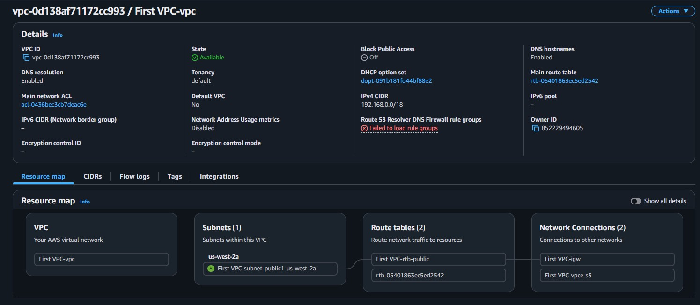

CIDR Planning
Identified the correct private IP range (192.168.x.x per RFC 1918) and calculated appropriate CIDR blocks: /18 for the VPC (16,384 IPs) and /26 for the public subnet (64 IPs).
This lab walks through the process of creating an Amazon VPC from scratch for a customer who needs approximately 15,000 private IP addresses and a public subnet with at least 50 addresses. The correct CIDR blocks and private IP ranges are calculated and applied.
Created a VPC named First VPC with CIDR block 192.168.0.0/18 (16,384 IPs) and a public subnet with CIDR 192.168.1.0/26 (64 IPs) using the VPC Wizard.
Identified the correct private IP range (192.168.x.x per RFC 1918) and calculated appropriate CIDR blocks: /18 for the VPC (16,384 IPs) and /26 for the public subnet (64 IPs).
Used the VPC Wizard to create a VPC with a single public subnet, including an Internet Gateway and route table. Verified successful creation in the console.
Created a Virtual Private Cloud using the VPC Wizard. The wizard automatically configured the VPC with a public subnet, route table, and Internet Gateway.
Automatically created and attached by the VPC Wizard to enable internet connectivity for resources in the public subnet.
Documentation of the VPC creation process following the customer's requirements.
192.168.0.0/16./18 provides 16,384 addresses (the smallest block above 15,000).192.168.0.0/18 and state Available.
This lab demonstrated the foundational process of creating a VPC from the customer's requirements. The key skill is translating business needs (e.g., "I need 15,000 IPs") into technical configurations (e.g., a /18 CIDR block in the 192.168.x.x range).
The VPC Wizard simplifies the process by bundling the VPC, subnet, route table, and Internet Gateway into a single workflow. For production environments, understanding each component individually becomes important, as covered in the next lab.